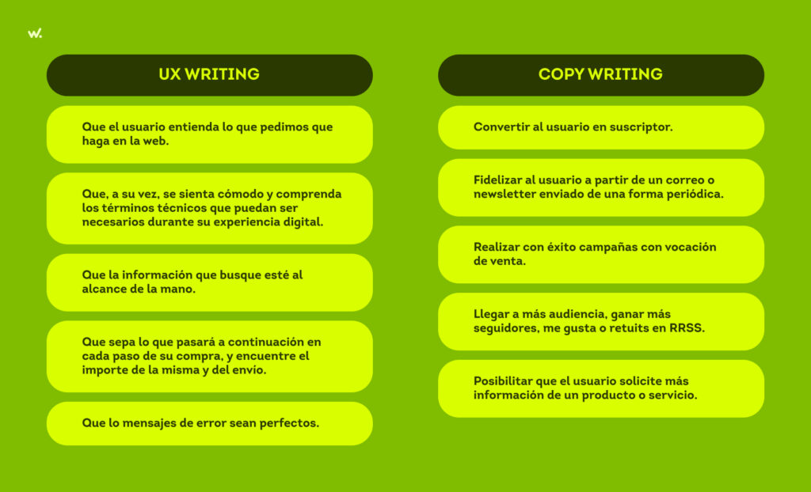

¿Que es el copywriting y por que es importante en el diseño web?
El copywriting es el proceso de producir textos persuasivos para acciones de Marketing y Ventas, como el contenido de correos electrónicos, sitios web, catálogos, anuncios y cartas comerciales

¿Cual es la diferencia entre copywritingy UX writing?
El tipo de copies: En el copywriting reina el ingenio y la creatividad para que los mensajes resulten lo más atractivos posible. Por otro lado, en el UX Writing se busca la concisión, la utilidad y la claridad en los mensajes para que un producto digital sea fácil de usar.
¿Como influye el tono y la voz de la marca en el copy de una pagina web?
si tu marca tiene un tono de voz divertido y juvenil, atraerá a una audiencia que busque contenido creativo y de entretenimiento. Por otro lado, si el tono de voz de la marca es más serio y profesional, atraerá a una audiencia que busque información clara y concisa.

¿Que tecnicas de copywriting pueden mejorar la conversion en una web?
El copywriting mejora con la práctica constante. Cuanto más escribas, más fácil será identificar errores comunes y perfeccionar tus habilidades. Convertir el copywriting en un hábito te ayudará a desarrollar tus propios trucos y hacer que la redacción se vuelva más fluida. Además, entender a tu público es fundamental para crear mensajes efectivos. Cada grupo tiene intereses y emociones diferentes, por lo que es crucial conocerlos bien para motivar una acción. También, debes definir la intención del mensaje, sabiendo exactamente lo que deseas lograr con tu copy y cómo quieres que el lector te perciba. Por último, realizar pruebas A/B te permite comparar diferentes versiones del copy y evaluar cuál tiene mejor rendimiento en términos de clics y conversiones, siempre basándote en los datos y no solo en intuiciones.
¿como se equilibra el texto con el diseño visual para mejorar la experiencia del usuario?
Para equilibrar el texto con el diseño visual y mejorar la experiencia del usuario, es clave: Jerarquía visual clara: Usa diferentes tamaños de fuente para títulos y cuerpo del texto, destacando lo importante. Espacio en blanco: Deja márgenes y espacio entre secciones para evitar que el texto se vea amontonado. Contraste y colores: Asegúrate de que el texto sea legible, con buen contraste respecto al fondo. Tipografía consistente: Usa pocas fuentes legibles y coherentes con el diseño. Alineación y proporciones: El texto y los elementos visuales deben estar bien alineados y equilibrados. Imágenes complementarias: Usa imágenes e iconos que ayuden a entender el contenido sin sobrecargar. Accesibilidad: Garantiza que el diseño sea accesible, permitiendo ajustes en el texto si es necesario.
¿Cuales son los errores mas comunes en el copy de una pagina web y como evitarlo?
Al crear el copy de una página web, algunos de los errores más comunes incluyen escribir textos largos y densos, no tener un llamado a la acción claro, usar jerga o tecnicismos innecesarios, y no centrarse en los beneficios para el usuario. También es importante evitar errores gramaticales, usar un tono adecuado, y garantizar una estructura visual clara. Además, hay que optimizar el contenido para SEO, incluir prueba social como testimonios, y realizar pruebas A/B para mejorar la efectividad. En general, es clave ser claro, conciso y enfocado en las necesidades del usuario.
¿Como se puede optimizarel copy para mejorar el SEO sin sacrificar la claridad del mensaje?
Para optimizar el copy sin sacrificar la claridad, sigue estos consejos: Usa palabras clave de forma natural en el texto, títulos y subtítulos. Crea contenido útil y enfocado en el usuario, priorizando sus necesidades y preguntas. Optimiza la meta descripción para que sea atractiva y contenga palabras clave. Escribe de manera conversacional para adaptarte a la búsqueda por voz. Evita el "keyword stuffing" (relleno de palabras clave) y usa sinónimos. Incluye enlaces internos y externos relevantes. Crea contenido extenso pero valioso, sin hacer que sea redundante. Optimiza imágenes con etiquetas ALT descriptivas. Haz que el contenido sea fácil de leer, usando listas y párrafos cortos.
¿Que papel juega el storytelling en el copywriting web?
El storytelling en el copywriting web transforma el contenido en una herramienta más poderosa para conectar emocionalmente con la audiencia, hacer el mensaje más claro y memorable, y construir una relación más sólida y humana con los usuarios. Las marcas que saben contar historias logran destacarse y mantener la atención de su audiencia de manera más efectiva.
¿Como adaptar el copy a diferentes formatos y dispositivos(movil, desktop,etc).?
Adaptar el copy a diferentes dispositivos es clave para asegurar una experiencia óptima. En móviles, el copy debe ser breve, claro y directo, con frases cortas y CTAs visibles y fáciles de pulsar. Usa diseño responsivo para que el contenido se ajuste a diferentes tamaños de pantalla y prioriza lo más importante al principio de la página. En desktop, puedes aprovechar el espacio adicional para incluir más detalles y contexto, pero siempre mantén una jerarquía visual clara. Asegúrate de que los botones sean grandes y fáciles de interactuar en dispositivos táctiles y que las imágenes estén optimizadas para cargar rápidamente en todos los dispositivos. Realiza pruebas de usabilidad regularmente para ajustar el copy según el comportamiento del usuario.
¿Cuales son las herramientas y recursos mas utiles para mejorar el copywriting en diseño web?
Para mejorar el copywriting en diseño web, es esencial contar con herramientas que optimicen tanto la redacción como la estrategia de contenido. Algunas de las más útiles incluyen Google Keyword Planner y SEMrush para investigar palabras clave y mejorar el SEO; Grammarly y Hemingway Editor para pulir la gramática y la legibilidad del texto. Plataformas como Optimizely y VWO permiten realizar pruebas A/B para ajustar el copy en función de las conversiones, mientras que Hotjar y Crazy Egg ofrecen análisis de la interacción de los usuarios con el contenido. Para generar ideas y títulos efectivos, CoSchedule Headline Analyzer y Copy.ai son muy útiles. Además, recursos de diseño como Canva y Google Fonts mejoran la presentación visual del copy. Finalmente, herramientas como Trello y Miro ayudan a organizar y planificar el contenido, y plataformas de formación como Udemy ofrecen cursos que te ayudan a perfeccionar tus habilidades. Con estas herramientas, puedes crear un copy optimizado, persuasivo y alineado con el diseño web, garantizando una experiencia de usuario efectiva.